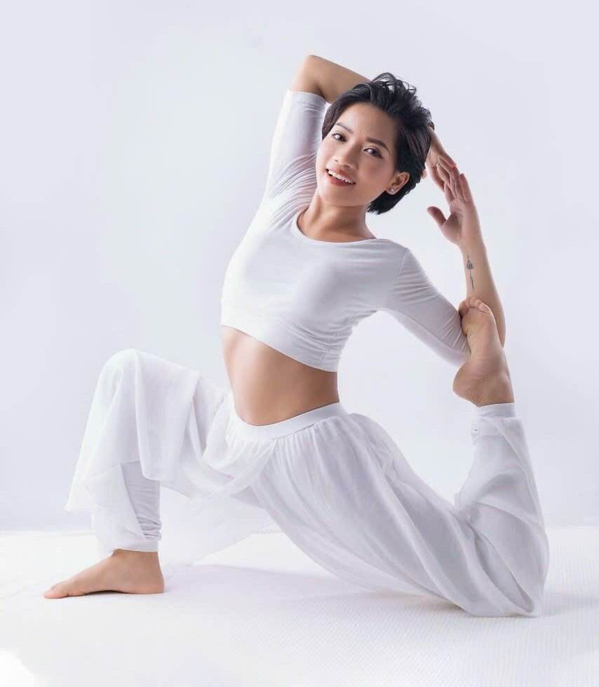

Yoga người lớn · Chăm sóc sức khỏe chủ động
Yoga cho đường huyết và chuyển hóa
Tiền tiểu đường, mỡ máu cao, vòng eo cứ to dần. Chuyện gì đang diễn ra bên trong cơ thể, và vì sao điều giúp được nhiều nhất không phải một tư thế, mà là cả cách mình ăn, đi, ngủ, thở và nghĩ mỗi ngày.
“Cô ơi, em mới đi khám. Bác sĩ bảo đường huyết hơi cao, tiền tiểu đường.”
“Em có béo đâu mà mỡ máu lại cao hả cô?”
“Ăn trưa xong là em buồn ngủ rũ ra, chiều nào cũng thèm đồ ngọt.”
Mấy năm gần đây, cô nghe những câu này nhiều hơn hẳn. Có khi từ người mới ngoài ba mươi. Ai cũng hơi hoang mang. Không đau, không ốm, mà tờ xét nghiệm lại có mấy dòng in đậm.
Tin vui là ở giai đoạn này, cơ thể còn rất nhiều đường để quay về.
Đường huyết, mỡ máu, mỡ bụng, huyết áp thường đi cùng nhau. Người ta gọi chung là chuyện chuyển hóa: cách cơ thể nhận thức ăn, đốt thành năng lượng và cất phần dư đi. Bài này không đưa ra “bài tập hạ đường huyết” hay “tư thế giảm mỡ máu”. Sophia muốn cùng nhìn lại cả lối sống, trên năm thể: thân, khí, tâm, trí và tinh thần. Vài tư thế ở cuối bài là một phần trong đó. Một phần nhỏ thôi.
Và một điều cô muốn nói ngay từ đầu: yoga đi cùng với bác sĩ, không đi thay. Ai đang dùng thuốc thì cứ dùng đúng như bác sĩ dặn. Phần tập an toàn khi đang dùng thuốc cô viết kỹ ở gần cuối bài.

- Tự nhìn lại
- Đường đi trong cơ thể
- Đọc tờ xét nghiệm
- Năm thể
- Ăn thế nào
- Đi bộ, đứng dậy
- Ngủ và căng thẳng
- Hơi thở
- 8 tư thế
- Khi đang dùng thuốc
- Khi nào đi khám
Mình đang ở đâu?
Đánh dấu những điều đúng với mình. Đây không phải chẩn đoán. Chỉ là một cách nhìn lại, để biết nên bắt đầu từ chỗ nào.
Mức vòng eo 80 cm và 90 cm là ngưỡng dành cho người châu Á mà Liên đoàn Đái tháo đường Quốc tế (IDF) dùng. Đo ngang rốn, đứng thẳng, thở ra nhẹ.
Đường đi một vòng trong cơ thể
Mình ăn một bát cơm. Tinh bột được tiêu hóa thành đường glucose, ngấm vào máu. Đường huyết tăng lên. Tuyến tụy thấy vậy liền tiết ra insulin. Insulin giống như chiếc chìa khóa: nó mở cửa tế bào cơ, tế bào gan, tế bào mỡ để đường đi vào, thành năng lượng hoặc được cất lại.
Cơ bắp là nơi nhận nhiều đường nhất. Sau bữa ăn, phần lớn lượng đường mà insulin “đưa đi” là vào cơ (DeFronzo và Tripathy, Diabetes Care, 2009). Cơ càng được dùng đến, cửa càng dễ mở.
Rồi đến một ngày, ổ khóa bắt đầu khô. Tế bào kém nhạy với insulin. Người ta gọi là đề kháng insulin. Tụy phải tiết nhiều hơn mới đẩy được cùng một lượng đường. Một thời gian dài, mọi thứ vẫn trông ổn. Đường huyết chỉ nhích lên một chút. Rồi thêm một chút. Đó là giai đoạn tiền tiểu đường. Nó thường lặng lẽ, không đau, không ngứa. Nhiều người chỉ biết khi đi khám sức khỏe.
Mỡ máu, mỡ gan, mỡ bụng, huyết áp cũng hay đi theo cùng con đường ấy. Vì vậy cô thấy nói chuyện đường huyết thì không tách riêng ra được. Nó là câu chuyện của cả lối sống.
Những thói quen cô gặp nhiều nhất ở lớp:
🪑
Ngồi nhiều, ít dùng đến cơ
Cơ bắp là nơi “ăn” đường nhiều nhất trong cơ thể. Cả ngày ngồi ghế, tối nằm sofa, cơ gần như nghỉ. Đường trong máu ở lại lâu hơn.
🍚
Nhiều cơm trắng, bánh ngọt, nước ngọt
Tinh bột tinh chế và đường được hấp thu rất nhanh. Đường huyết vọt lên, cơ thể phải tiết nhiều insulin để kéo xuống. Ngày nào cũng vậy, lâu dần nó mệt.
🌙
Ngủ ít, thức khuya
Chỉ vài đêm ngủ thiếu, cơ thể đã xử lý đường kém hơn. Ngủ ít cũng làm mình thèm ngọt, thèm đồ béo vào hôm sau.
⚡
Căng thẳng kéo dài
Khi lo, cơ thể tiết cortisol và adrenalin. Hai chất này đẩy đường huyết lên để mình “sẵn sàng chiến đấu”. Nhưng mình đâu có chiến đấu. Mình ngồi họp.
🫃
Mỡ bụng, mỡ nội tạng
Mỡ quanh eo không chỉ nằm yên. Nó tiết ra những chất làm tế bào kém nhạy với insulin. Có người không béo nhưng vòng eo to dần, vẫn đáng để ý.
🧬
Tuổi và gia đình
Bố mẹ, anh chị em bị tiểu đường, từng bị tiểu đường thai kỳ, ngoài 35 tuổi. Những điều này mình không đổi được. Nhưng lối sống thì đổi được.
Theo Atlas Đái tháo đường của IDF (ấn bản thứ 10, 2021), khoảng 537 triệu người trưởng thành trên thế giới đang sống với bệnh tiểu đường, và còn nhiều người hơn thế ở giai đoạn dung nạp đường kém mà chưa biết.
Đọc tờ xét nghiệm cho bớt sợ
Cô không phải bác sĩ. Những con số dưới đây là ngưỡng chung mà Hiệp hội Đái tháo đường Hoa Kỳ (ADA) dùng, để mình đọc tờ kết quả cho đỡ hoang mang. Còn mình đang ở đâu, cần làm gì, bác sĩ là người nói.
| Chỉ số | Bình thường | Tiền tiểu đường | Tiểu đường |
|---|---|---|---|
| Đường huyết lúc đói (nhịn ăn ít nhất 8 tiếng) | dưới 5,6 mmol/L (100 mg/dL) | 5,6 đến 6,9 mmol/L (100 đến 125) | từ 7,0 mmol/L (126) trở lên |
| HbA1c (đường huyết trung bình khoảng 3 tháng) | dưới 5,7% | 5,7% đến 6,4% | từ 6,5% trở lên |
| 2 giờ sau uống 75 g đường | dưới 7,8 mmol/L (140) | 7,8 đến 11,0 mmol/L (140 đến 199) | từ 11,1 mmol/L (200) trở lên |
Còn hội chứng chuyển hóa là khi có từ ba trong năm điều sau: vòng eo lớn (người châu Á: nam từ 90 cm, nữ từ 80 cm), triglycerid từ 1,7 mmol/L, HDL (mỡ “tốt”) thấp dưới 1,0 mmol/L ở nam hay dưới 1,3 mmol/L ở nữ, huyết áp từ 130/85, đường huyết lúc đói từ 5,6 mmol/L (Alberti và cộng sự, Circulation, 2009). Năm điều này hay rủ nhau đến. Và khi lối sống đổi, chúng cũng hay rủ nhau lui.
Cân bằng lại trên cả năm thể
Theo yoga, con người có năm lớp: thân, khí, tâm, trí, và phần tinh thần sâu nhất bên trong (bài Năm thể của con người kể kỹ hơn). Đường huyết nghe như chuyện của thân. Nhưng ai từng ăn một hộp bánh lúc buồn, lúc stress, sẽ hiểu nó cũng là chuyện của tâm.
🌿 Thân
Đĩa ăn nhiều rau, ít đồ ngọt. Đi bộ sau bữa. Đứng dậy giữa giờ. Vài tư thế dùng đến những nhóm cơ lớn: đùi, mông, bắp chân.
🌬️ Khí
Thở chậm, thở ra dài. Hơi thở là cách nhanh nhất để nói với cơ thể: không có gì nguy hiểm, không cần dồn đường lên nữa.
💗 Tâm
Nhận ra khi mình ăn vì đói hay ăn vì mệt, vì buồn, vì cô đơn. Không trách mình. Chỉ nhận ra thôi, đã là một bước.
🧠 Trí
Đổi câu “ăn kiêng cho khổ” thành “ăn để thương cơ thể”. Đổi “phải tập một tiếng” thành “mười phút sau bữa tối là đủ bắt đầu”.
✨ Tinh thần
Sống chậm hơn một nhịp. Ngủ đúng giờ như một cách tôn trọng mình. Biết đủ, trong bữa ăn và cả trong những điều mình đòi hỏi ở bản thân.
Không cần đổi cả năm cùng lúc. Chọn một điều dễ nhất. Giữ nó ba tuần. Rồi thêm điều thứ hai.
Trong Chương trình Phòng ngừa Tiểu đường của Mỹ, hơn 3.000 người tiền tiểu đường được chia nhóm. Nhóm đổi lối sống (giảm khoảng 7% cân nặng, vận động 150 phút mỗi tuần) giảm 58% nguy cơ chuyển sang tiểu đường trong khoảng 3 năm, nhiều hơn nhóm dùng thuốc metformin (giảm 31%) (Knowler và cộng sự, New England Journal of Medicine, 2002). Một nghiên cứu ở Phần Lan cũng ghi nhận con số 58% (Tuomilehto và cộng sự, NEJM, 2001).
Cô đọc những con số này mà thấy thương. Không có viên thuốc thần nào ở đây. Chỉ là bữa ăn, bước chân, giấc ngủ, làm đều mỗi ngày.
Ăn thế nào cho đường huyết êm
Cô không đưa thực đơn. Người tiểu đường, người bệnh thận, người đang dùng thuốc cần chế độ ăn riêng, nên hỏi bác sĩ hay chuyên gia dinh dưỡng. Nhưng có vài điều về cách ăn mà ai cũng thử được ngay bữa tới.
Một nửa đĩa là rau. Một phần tư là đạm: cá, đậu phụ, trứng, thịt nạc. Một phần tư là tinh bột, ưu tiên gạo lứt, khoai, ngô, bánh mì nguyên cám. Uống nước lọc thay nước ngọt.
Ăn theo thứ tự 1, 2, 3. Rau trước, rồi đạm, cơm sau cùng. Vẫn là những món ấy, chỉ đổi thứ tự.
Ở người tiểu đường type 2, cùng một bữa ăn, ăn rau và đạm trước rồi mới ăn tinh bột thì đường huyết sau ăn thấp hơn rõ so với ăn tinh bột trước (Shukla và cộng sự, Diabetes Care, 2015). Nghiên cứu nhỏ, chỉ 11 người, nhưng là một mẹo dễ làm, không tốn gì. Cuốn Glucose Revolution của Jessie Inchauspé (2022) kể lại những mẹo kiểu này rất dễ đọc.
Ăn chậm. Nhai kỹ, đặt đũa xuống giữa các miếng. Tín hiệu no cần khoảng hai mươi phút mới đến được não.
Bớt đồ uống ngọt. Một cốc trà sữa có thể chứa lượng đường nhiều hơn cả một bữa cơm. Đường trong nước vào máu rất nhanh, lại không làm mình no. Đây thường là thay đổi nhỏ nhất mà kết quả rõ nhất cô từng thấy.
Không nhịn đói cực đoan. Bỏ bữa rồi ăn bù thật nhiều làm đường huyết lên xuống như tàu lượn. Người đang dùng thuốc hạ đường huyết mà nhịn ăn còn dễ bị hạ đường huyết. Về ăn uống theo tinh thần yoga, có bài Dinh dưỡng trong yoga.
Một ngày đường huyết êm
- Khi vừa thức dậyMột cốc nước. Vài hơi thở chậm. Ra ban công, ra cửa sổ, nhìn ánh sáng ban ngày một lúc. Đồng hồ sinh học của cơ thể bắt nhịp từ đây.
- Bữa sángĂn có đạm, có rau, có chất béo tốt. Bớt một bữa chỉ toàn bánh mì ngọt với cà phê sữa. Không nhịn bữa sáng rồi trưa ăn bù thật nhiều.
- Giữa buổi làm việcCứ khoảng 30 đến 60 phút, đứng dậy đi lại hai ba phút. Đi lấy nước, lên xuống một tầng cầu thang. Ngồi thì nhón gót dưới gầm bàn.
- Bữa trưaĂn rau trước, rồi thịt cá đậu, cơm sau cùng. Ăn chậm. Xong bữa, đi bộ thong thả mười đến mười lăm phút.
- Buổi chiềuKhi thèm đồ ngọt, uống một cốc nước, thở chậm vài hơi, hỏi khẽ mình: đói thật hay mệt? Có khi chỉ cần đứng dậy đi một vòng.
- Bữa tốiĂn sớm, nhẹ hơn bữa trưa. Xong trước giờ ngủ khoảng 3 tiếng. Sau ăn, đi bộ chậm hoặc làm việc nhà nhẹ, đừng nằm ngay.
- Trước giờ ngủTắt màn hình sớm. Vài tư thế nằm nhẹ, hơi thở ra dài. Ngủ trước 11 giờ đêm, đủ 7 đến 8 tiếng.
Đi bộ sau ăn, đứng dậy giữa giờ
Nếu chỉ chọn một thói quen, cô sẽ chọn cái này. Mười đến mười lăm phút đi bộ thong thả sau bữa ăn. Không cần nhanh, không cần ra mồ hôi. Đi quanh nhà, xuống sân, rửa bát xong đi một vòng ngõ. Lúc này cơ chân đang làm việc, và nó kéo đường trong máu về phía mình.
Ngồi làm việc cả ngày thì cứ khoảng nửa tiếng đến một tiếng, đứng dậy vài phút. Ngồi họp lâu thì nhón gót dưới gầm bàn. Nghe nhỏ quá, nhưng cộng lại cả ngày là nhiều.
Và dùng đến cơ lớn. Đùi, mông, lưng. Những tư thế như cái ghế, chiến binh, cây cầu ở cuối bài là cách nhẹ nhàng để giữ cơ. Ai khỏe hơn có thể thêm đi bộ nhanh, đạp xe, bơi, tập tạ nhẹ, cho đủ khoảng 150 phút mỗi tuần như Tổ chức Y tế Thế giới khuyên.
Đi bộ sau ăn: ở người cao tuổi có nguy cơ, ba lần đi bộ 15 phút sau ba bữa giúp đường huyết cả ngày tốt ngang với một lần đi bộ 45 phút, và tốt hơn hẳn với đường huyết sau bữa tối (DiPietro và cộng sự, Diabetes Care, 2013).
Ngắt quãng thời gian ngồi: một tổng quan năm 2022 ghi nhận những lần đi bộ nhẹ xen giữa giờ ngồi làm đường huyết và insulin sau ăn thấp hơn so với ngồi liền (Buffey và cộng sự, Sports Medicine, 2022).
Nhón gót khi ngồi: một nghiên cứu nhỏ cho thấy nhón gót liên tục trong lúc ngồi, kéo dài nhiều giờ, giúp giảm khoảng một nửa mức tăng đường huyết sau ăn (Hamilton và cộng sự, iScience, 2022). Cô không mong ai nhón gót cả buổi. Nhưng biết bắp chân cũng làm được việc, ngồi lâu thì nhớ đến nó.
Ngủ và căng thẳng: hai chuyện hay bị quên
Nhiều người ăn rất kỹ, tập rất chăm, mà đường huyết vẫn khó xuống. Cô hay hỏi thêm: dạo này ngủ mấy tiếng? Có chuyện gì đang lo không?
Ngủ. Khi ngủ thiếu, cơ thể xử lý đường kém hơn ngay từ những ngày đầu. Ở một nghiên cứu kinh điển, những người trẻ khỏe chỉ được ngủ 4 tiếng mỗi đêm trong 6 đêm đã dung nạp đường kém đi rõ rệt, rồi hồi lại khi được ngủ bù (Spiegel, Leproult, Van Cauter, The Lancet, 1999). Ngủ đủ 7 đến 8 tiếng không phải chuyện xa xỉ. Nó là một phần của điều trị. Bài Yoga cho giấc ngủ có nhiều cách để vào giấc dễ hơn.
Căng thẳng. Khi lo, cơ thể tiết cortisol. Cortisol bảo gan đưa thêm đường vào máu, để mình có sức đối phó. Ngày xưa là để chạy trốn thú dữ. Bây giờ thú dữ là hộp thư, là deadline, là những chuyện trong nhà. Đường được đẩy lên mà không có chỗ dùng. Vì vậy chăm đường huyết cũng là chăm lòng mình. Bài Yoga cho người căng thẳng, lo âu nói kỹ hơn.
Thể khí: thở ra dài
Hơi thở ra dài hơn hơi thở vào là cách mời nhánh thần kinh phó giao cảm, nhánh “nghỉ ngơi và tiêu hóa”, quay lại. Tim chậm xuống. Cơ vai mềm ra. Cơ thể thôi ở thế phòng thủ. Cô hay thở như thế này trước bữa ăn, và trước giờ ngủ. Ba phút thôi.
Ngồi thẳng, một tay đặt lên bụng. Hít vào 4 nhịp, bụng phồng nhẹ. Thở ra 6 nhịp, bụng hạ xuống. Theo quả bóng vàng.
Mới tập thì chọn 3 và 5. Thấy hụt hơi, chóng mặt thì quay về thở tự nhiên.
Có những phép thở mạnh như Kapalabhati hay Bhastrika vẫn hay được nhắc khi nói về chuyển hóa. Cô thì cẩn thận hơn. Người cao huyết áp, bệnh tim, bệnh võng mạc, mới mổ, đang mang thai thì cô không khuyên tập. Với hầu hết mọi người, thở chậm mỗi ngày đã đủ, và an toàn hơn nhiều. Các cách thở khác có trong bài Các phép thở.
8 tư thế nhẹ, khoảng 15 phút
Chuỗi này đi từ đứng, dùng đến những nhóm cơ lớn, rồi xuống sàn, chậm dần, kết thúc bằng thư giãn. Tập buổi sáng, hoặc sau bữa ăn khoảng 1 đến 2 tiếng. Thở đều suốt, không nín thở khi giữ tư thế.
Đứng núi, nhón gót1 phút
Tadasana
Đứng hai bàn chân rộng bằng hông. Hít vào, nhón gót lên. Thở ra, hạ gót xuống thật chậm. Mười đến hai mươi lần. Bắp chân là một nhóm cơ nhỏ mà chăm chỉ, ngồi làm việc cũng nhón gót được.
🌱 Đứng cạnh ghế hay tường, một tay bám nhẹ. Chân tê, mất cảm giác ở bàn chân thì làm thế ngồi.
Tư thế cái ghế3 lần, mỗi lần 5 hơi
Utkatasana
Hai chân khép hoặc rộng bằng hông. Thở ra, đẩy hông ra sau như sắp ngồi xuống một chiếc ghế vô hình. Hai tay đưa lên. Lưng dài, nhìn thẳng. Giữ năm hơi rồi đứng lên. Đùi là cơ lớn nhất cơ thể, và nó dùng đường rất nhiều.
🌱 Mới tập thì lưng tựa tường, trượt xuống một chút. Đau gối thì ngồi nông thôi.
Chiến binh 25 hơi mỗi bên
Virabhadrasana II
Bước hai chân thật rộng. Xoay bàn chân phải ra ngoài, gập gối phải cho gối nằm trên cổ chân. Hai tay dang ngang vai, mắt nhìn qua đầu ngón tay phải. Thở đều. Rồi đổi bên.
🌱 Gối trước không vượt quá mũi chân. Cao huyết áp thì có thể chống tay lên hông thay vì dang tay.
Mèo và bò1 phút
Marjaryasana, Bitilasana
Chống tay và gối. Hít vào, bụng thả xuống, ngực mở. Thở ra, cong lưng, kéo nhẹ rốn vào trong. Tám vòng theo đúng nhịp thở của mình.
🌱 Cổ tay đau thì chống trên nắm tay hoặc hạ xuống cẳng tay.
Cây cầu6 lần
Setu Bandha Sarvangasana
Nằm ngửa, co gối, bàn chân rộng bằng hông. Thở ra, ép bàn chân xuống sàn, nâng hông lên. Hít vào giữ. Thở ra hạ xuống từng đốt sống. Cơ mông, cơ đùi sau thức dậy sau cả ngày ngồi.
🌱 Để cơ mông làm việc, không phải lưng dưới. Đau cổ thì không xoay đầu khi đang nâng hông.
Vặn mình ngồi xếp bằng5 hơi mỗi bên
Parivrtta Sukhasana
Ngồi xếp bằng, lưng dài. Hít vào kéo dài cột sống. Thở ra xoay nhẹ thân sang phải, tay trái đặt lên gối phải. Vặn từ bụng và ngực, cổ đi theo sau cùng. Rồi đổi bên. Ngồi trên ghế cũng làm được.
🌱 Vặn vừa đủ dễ chịu. Tập lúc bụng không quá no. Thoát vị đĩa đệm thì chỉ xoay rất ít.
Gác chân lên tường3 đến 5 phút
Viparita Karani
Ngồi nghiêng sát tường, xoay người nằm xuống, đưa hai chân lên tường. Hông cách tường một chút cũng được. Tay để trên bụng. Thở chậm.
🌱 Không làm khi có bệnh võng mạc (kể cả bệnh võng mạc do tiểu đường), tăng nhãn áp, cao huyết áp chưa kiểm soát, suy tim. Thay bằng nằm ngửa, gác bắp chân lên ghế.
Nằm thư giãn5 đến 10 phút
Shavasana
Nằm ngửa, chân hơi mở, lòng bàn tay ngửa. Kê gối dưới khoeo nếu lưng mỏi. Để hơi thở tự nhiên. Cảm nhận cả cơ thể nặng xuống sàn. Không cần làm gì nữa.
🌱 Buồn ngủ thì cứ ngủ một chút, nếu không phải đi đâu.
Một phân tích gộp 12 thử nghiệm ở người tiểu đường type 2 ghi nhận nhóm tập yoga có đường huyết lúc đói, đường huyết sau ăn, HbA1c và mỡ máu tốt hơn nhóm không tập (Cui và cộng sự, Journal of Diabetes Investigation, 2017). Một tổng quan khác về yếu tố nguy cơ tim mạch thấy yoga giúp cải thiện huyết áp, mỡ máu, chỉ số khối cơ thể so với không tập, và hiệu quả gần ngang với các bài vận động khác (Cramer và cộng sự, International Journal of Cardiology, 2014).
Các tác giả đều nói nhiều nghiên cứu còn nhỏ và ngắn. Cô đọc kết quả ấy thế này: yoga giúp được, nhất là khi đi cùng ăn uống, ngủ nghỉ và tâm thế. Nó không thay cho thuốc khi cần thuốc.
Tập an toàn khi đang dùng thuốc
Không tự bỏ thuốc, không tự giảm liều, kể cả khi thấy đường huyết đẹp lên sau một thời gian tập. Mang kết quả về cho bác sĩ xem. Bác sĩ sẽ là người điều chỉnh.
- Đang dùng insulin hoặc thuốc kích thích tụy tiết insulin (như nhóm sulfonylurea): vận động có thể làm đường huyết xuống thấp. Đừng tập khi bụng đói. Mang theo vài viên kẹo hay hộp nước quả. Hỏi bác sĩ có nên đo đường huyết trước và sau khi tập.
- Dấu hiệu hạ đường huyết: run tay, vã mồ hôi, đói cồn cào, tim đập nhanh, chóng mặt, khó tập trung. Khi đó dừng tập ngay, ăn hay uống khoảng 15 g đường nhanh (nửa cốc nước quả, hoặc một thìa canh đường hòa nước), nghỉ 15 phút rồi kiểm tra lại. Đây là “quy tắc 15 và 15” mà ADA hướng dẫn.
- Bàn chân tê, mất cảm giác: tập có đi tất chống trượt hoặc kiểm tra bàn chân sau mỗi buổi. Một vết xước nhỏ cũng nên để ý.
- Bệnh võng mạc, tăng nhãn áp: tránh các thế đầu thấp hơn tim, thế đảo ngược, và không nín thở khi gồng.
- Cao huyết áp, bệnh tim: tránh nín thở, tránh giơ tay quá đầu lâu, đứng dậy từ từ để không choáng.
Báo cho người hướng dẫn biết mình đang có bệnh gì, đang dùng thuốc gì. Không có gì phải ngại. Đó là cách để buổi tập an toàn.
Khi nào nên xét nghiệm, khi nào đi khám
ADA khuyên mọi người trưởng thành từ 35 tuổi nên xét nghiệm đường huyết, và nếu bình thường thì làm lại ít nhất 3 năm một lần. Nên làm sớm hơn nếu thừa cân, vòng eo lớn, có bố mẹ hay anh chị em bị tiểu đường, từng bị tiểu đường thai kỳ, có cao huyết áp, mỡ máu cao, hoặc buồng trứng đa nang.
Đi khám sớm khi có những dấu hiệu sau:
- Khát nước nhiều, đi tiểu nhiều, nhất là ban đêm.
- Sụt cân không rõ lý do dù vẫn ăn như thường.
- Mệt mỏi kéo dài, mờ mắt.
- Vết thương lâu lành, hay bị nhiễm nấm, nhiễm trùng da.
- Tê bì, châm chích ở bàn chân, bàn tay.
Gọi cấp cứu 115 ngay khi có người lơ mơ, lú lẫn, co giật, ngất, hoặc đường huyết rất cao kèm nôn nhiều, đau bụng, thở nhanh sâu, hơi thở có mùi lạ như táo chín. Với người đang dùng thuốc hạ đường huyết mà lơ mơ, không tự ăn uống được, đừng cố đổ nước vào miệng. Gọi cấp cứu.
Lời nhỏ cuối bài
Một tờ xét nghiệm có mấy dòng in đậm dễ làm mình sợ. Cô hiểu.
Nhưng cô cũng hay nghĩ, đó là cơ thể đang gửi một lá thư. Viết sớm. Lúc mình còn đủ thời gian để trả lời.
Ăn rau trước. Đi bộ sau bữa tối. Ngủ sớm hơn ba mươi phút. Thở ra dài khi thấy lòng mình gấp.
Không cần làm hết. Chỉ cần làm đều.
🌿 Muốn có một người cùng tập, chậm và đúng cách?
Sophia Yoga có lớp người lớn trực tiếp, lớp Zoom và lớp kèm 1 kèm 1, chú trọng hơi thở, thư giãn và lối sống cân bằng. Ai muốn mang những điều nhẹ nhàng này đến với các con, có khóa đào tạo HLV Yoga trẻ em.
Tài liệu tham khảo
- Knowler W.C. và cộng sự (2002). Reduction in the incidence of type 2 diabetes with lifestyle intervention or metformin. New England Journal of Medicine, 346(6).
- Tuomilehto J. và cộng sự (2001). Prevention of type 2 diabetes mellitus by changes in lifestyle among subjects with impaired glucose tolerance. New England Journal of Medicine, 344(18).
- DeFronzo R.A., Tripathy D. (2009). Skeletal muscle insulin resistance is the primary defect in type 2 diabetes. Diabetes Care, 32(Suppl 2).
- Alberti K.G.M.M. và cộng sự (2009). Harmonizing the metabolic syndrome. Circulation, 120(16).
- American Diabetes Association. Standards of Care in Diabetes: Diagnosis and Classification; Screening for prediabetes and type 2 diabetes.
- International Diabetes Federation (2021). IDF Diabetes Atlas, 10th edition.
- Shukla A.P. và cộng sự (2015). Food order has a significant impact on postprandial glucose and insulin levels. Diabetes Care, 38(7).
- DiPietro L. và cộng sự (2013). Three 15-min bouts of moderate postmeal walking significantly improves 24-h glycemic control in older people at risk for impaired glucose tolerance. Diabetes Care, 36(10).
- Buffey A.J. và cộng sự (2022). The acute effects of interrupting prolonged sitting time in adults with standing and light-intensity walking on biomarkers of cardiometabolic health: a systematic review and meta-analysis. Sports Medicine, 52(8).
- Hamilton M.T. và cộng sự (2022). A potent physiological method to magnify and sustain soleus oxidative metabolism improves glucose and lipid regulation. iScience, 25(9).
- Spiegel K., Leproult R., Van Cauter E. (1999). Impact of sleep debt on metabolic and endocrine function. The Lancet, 354(9188).
- Cui J. và cộng sự (2017). Effects of yoga in adults with type 2 diabetes mellitus: a meta-analysis. Journal of Diabetes Investigation, 8(2).
- Cramer H. và cộng sự (2014). Effects of yoga on cardiovascular disease risk factors: a systematic review and meta-analysis. International Journal of Cardiology, 173(2).
- World Health Organization (2020). WHO guidelines on physical activity and sedentary behaviour.
- Inchauspé J. (2022). Glucose Revolution. Simon & Schuster.
Hình minh họa do Sophia Yoga tự vẽ. Những câu hỏi trong bài là những điều cô hay được hỏi ở lớp, không nêu tên học viên. Bài viết chia sẻ kiến thức và kinh nghiệm tập luyện, không thay cho chẩn đoán và điều trị của bác sĩ.